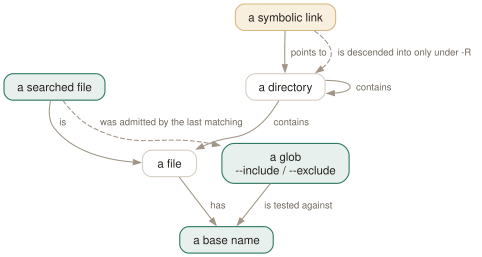

Day 07
Searching a tree
Recursion, and a second pattern language that is not regular expressions.
By the end of today you can
- keep
grep -rout of.gitandnode_moduleswithout thinking about it - explain why
--include='src/*.c'matches nothing when recursing but works on a named file - predict what swapping the order of an
--includeand an--excludedoes
grep searches everything, because nobody told it not to
grep -r walks the tree and reads every file in it. Every file: the .git object store, node_modules, the build directory, the minified bundle, the vendored copy of a library you have never opened. grep has no ignore file and no concept of a project. Everything on this page exists to narrow that down.
This is the largest single difference between grep and the modern replacements. ripgrep reads your .gitignore and skips hidden directories by default; grep does neither, and will not start. What it gives you instead is an explicit filter language you control completely — and it is a second pattern language, unrelated to the regular expressions of Days 3 and 4.

/ can never match during recursion, because a base name never contains one. Second, grep's file filtering has no idea where in the tree it is — there is no .gitignore, no ignore file of any kind, and .git and node_modules are searched like anything else until you name them.The two recursive options
-r- Descend into directories, following symbolic links only when you named them on the command line. This is what you want.
-R- Descend, following every symbolic link encountered along the way. On a tree containing a link to one of its own ancestors this does not terminate.
Both accept no file operand at all, in which case they search the working directory — the one case in grep where a missing operand does not mean standard input. -d recurse is a synonym for -r; -d skip silently ignores directories, which is occasionally useful when a glob has handed grep a mixture of files and directories.
The glob language, and where it is applied
The filters understand *, ? and [...], with \ to quote a wildcard literally. What matters far more than the syntax is what they are matched against, and the answer differs between the two cases.
- When recursing
- The glob is tested against the file's base name — the part after the last slash.
src/deep/main.cis tested asmain.c. - For a file named on the command line
- The glob is tested against any name suffix: the whole name, or a trailing part beginning just after a slash.
src/main.ccan be matched bymain.cor bysrc/main.c.
$ grep -rl --include='src/*.c' needle .
$ echo $?
1
$ grep -l --include='src/*.c' needle src/a.c
src/a.c
$ find src -name '*.c' -not -path '*/deep/*' -exec grep -Hn TODO {} +
Include, exclude, and the order that changes everything
Two rules govern how the filters combine, and neither is guessable:
- If more than one
--includeor--excludematches a file, the last one on the command line wins. - If none of them matches, the file is included — unless the first such option on the line was an
--include, in which case it is excluded.
$ grep -rl --include='*.c' --exclude='test_*' needle .
./.git/g.c
./vendor/v.c
./src/a.c
./src/deep/c.c
$ grep -rl --exclude='test_*' --include='*.c' needle .
./README.md
./node_modules/n.js
./.git/g.c
./vendor/v.c
./src/test_a.c
./src/b.h
./src/a.c
./src/deep/c.c
The second command is the first with two options transposed, and it returns the whole tree. (Note that even the first one reached into .git — the filter was about file names, and nothing told grep that directory was uninteresting.) README.md matches neither filter; because the first filter was an --exclude, the default is to include, so in it comes. And src/test_a.c matches both, so the last one — --include — wins and it is kept, which is the opposite of what the author meant.
Making it permanent
grep has no config file, but --exclude-from reads a list of globs from a file, which is the closest approximation available. Combined with a shell function it gives you a project-aware grep without leaving grep.
# ~/.grep-exclude - one glob per line, base names only
*.min.js
*.map
*.lock
*.pyc
$ g() {
> grep -rn --exclude-from="$HOME/.grep-exclude" \
> --exclude-dir=.git --exclude-dir=node_modules \
> --exclude-dir=target --exclude-dir=.venv "$@"
> }
$ g -F -- "$needle" src/
Today's habit
Stop typing bare grep -r in a repository. The version with your exclusions is faster, quieter, and does not fill the screen with hits from inside .git.
# ~/grep-recipes.sh
#
# Day 7: project grep. --include FIRST so the filter reads as a whitelist.
grep -rn --include='*.py' --exclude='test_*' TODO .
# Day 7: the directories that are never worth reading.
grep -rn --exclude-dir={.git,node_modules,target,.venv,dist} PATTERN .
# Day 7: unattended recursion - -r not -R (cycles), -D skip (FIFOs).
grep -rn -D skip PATTERN /var/data
New vocabulary
Options
| Option | Does |
|---|---|
-r, --recursive | Descend into directories, following symbolic links only if named on the command line. |
-R, --dereference-recursive | Descend, following every symbolic link. Can loop forever on a cyclic tree. |
-d ACTION, --directories=ACTION | read (the default, which fails on Linux), skip, or recurse — the last being -r. |
-D ACTION, --devices=ACTION | read (default) or skip, for devices, FIFOs and sockets. skip stops grep blocking on a pipe. |
--include=GLOB | Search only files whose base name matches GLOB. |
--exclude=GLOB | Skip files whose base name matches GLOB. |
--exclude-dir=GLOB | Skip directories whose base name matches GLOB. Trailing slashes are ignored. |
--exclude-from=FILE | Read a list of --exclude globs from a file, one per line. |
Drillsdo these in a real terminal, today
Self-check
Answer out loud first, then unfold.
You write grep -r --include='src/*.c' TODO . and get nothing, although src/main.c plainly contains a TODO. The same glob works in ls src/*.c. What is different?
When grep is recursing, --include is tested against the base name — main.c, with no directory part at all. A glob containing a / therefore can never match anything, and grep does not warn you; it simply selects no files and exits 1.
Confusingly, the rule is different for files named directly on the command line: there the glob is tested against any name suffix, so grep --include='src/*.c' TODO src/main.c does match. If you need directory structure in the filter, that is find's job — find src -name '*.c' -exec grep -Hn TODO {} +.
Why does grep -rl --include='*.c' --exclude='test_*' pat . behave sensibly, while the same two options in the opposite order return every file in the tree?
Two rules interact. The first is that among the options that do match a given file, the last one on the command line wins. The second is the tiebreak for files that match none of them: such a file is included unless the first include/exclude option on the line was an --include.
So with --include first, a .md file matches nothing and is therefore excluded — which is the behaviour you wanted. With --exclude first, that same .md file matches nothing and is therefore included. The options are not commutative, and nothing in the output tells you which reading you got.
A nightly job runs grep -R pattern /var/data and one morning it has been running for nine hours and the log is enormous. grep -r over the same tree takes a minute.
-R follows every symbolic link it meets during the descent; -r follows only links you named on the command line. Somewhere under /var/data there is a link pointing to an ancestor directory — or to / — and grep is walking the resulting cycle, re-reading the same files under ever longer paths.
Use -r by default and reserve -R for trees you control. It is the same reason find does not follow links without -L: on a general-purpose filesystem, link-following recursion has no guaranteed termination.
A script reads grep -r pattern "$dir". It normally prints a few lines; occasionally it hangs forever with no output. The directory is fine.
There is a FIFO in the tree. The default -D action is read, so grep opens the named pipe and blocks waiting for a writer that may never come. Sockets and some device files behave the same way.
The fix is -D skip, and it belongs in any recursive grep that runs unattended over a tree you did not create. It costs nothing when there are no devices to skip.
Cheat sheet
-r recurse; follows a symlink only if you NAMED it (use this one)
-R recurse; follows every symlink (can loop forever on a cyclic tree)
-D skip do not open FIFOs/sockets/devices (default is 'read' = may hang)
-d skip ignore directory operands instead of erroring
--include=GLOB --exclude=GLOB --exclude-dir=GLOB --exclude-from=FILE
# globs are * ? [...] and \ to quote. NOT regular expressions.
# when RECURSING they match the BASE NAME only - a glob with a / in it
# can never match, and you get exit 1 with no warning.
# for a file named on the command line they match any name SUFFIX.
# combining: last matching option wins; a file matching NONE is included
# unless the FIRST such option was --include. So put --include first and
# the whole filter reads as a whitelist. Transposing them changes everything.
# grep has NO ignore file. .git and node_modules are searched until you say not to.
Everything through Day 07
Commands
| Command | Does |
|---|---|
grep root /etc/passwd | Search one named file. No filename prefix on the output. |
grep root /etc/passwd /etc/group | Search several. Output gains a file: prefix automatically. |
grep root | No file operand: read standard input. From a terminal, this waits for you. |
grep -r root | No file operand and -r: search the working directory instead. |
cmd | grep root - | A file operand of - is standard input, mixable with real files. |
echo $? | Read the status grep just returned. The habit this whole day is about. |
grep -e -v file.txt | Search for the literal string -v. -e protects a pattern that starts with a dash. |
grep -f patterns.txt data.txt | Take patterns from a file, one per line. The workhorse for long lists. |
cut -f1 ids.csv | grep -f - data.txt | Patterns from a pipe. -f - reads them from standard input. |
Options
| Option | Does |
|---|---|
-V, --version | Print the version and exit. Know which grep you are actually running. |
--help | Print the option summary and exit. Shorter and better organised than the man page. |
-- | End of options. Everything after it is a pattern or a filename, never a flag. |
-i, --ignore-case | Match regardless of case. What counts as “the same letter” depends on the locale. |
--no-ignore-case | Cancel an earlier -i. The last of the two on the line wins. |
-v, --invert-match | Select the lines that did not match. Applied once, after all patterns. |
-w, --word-regexp | Require the matched substring to be bounded by non-word characters or line ends. |
-x, --line-regexp | Require the match to be the entire line. Silently overrides -w. |
-e PAT, --regexp=PAT | Add a pattern. Repeatable, and combinable with -f. |
-f FILE, --file=FILE | Add every line of FILE as a pattern. An empty file matches nothing at all. |
-y | Undocumented synonym for -i. In neither the man page nor --help, but 3.12 accepts it. |
. | Match any single character. Whether it matches an encoding error is unspecified. |
[abc] | Match one character from the list. |
[^abc] | Match one character not in the list. The ^ must come first. |
[a-d] | A range. In the C locale, ASCII order; elsewhere the standard says it is unspecified. |
[[:digit:]] | A named class. The outer brackets are yours, the inner ones are part of the name. |
^ and $ | Anchor to the start and end of a line. They match a position, not a character. |
\< and \> | Anchor to the start and end of a word. A GNU extension. |
\b and \B | Anchor at, and not at, a word edge. \b is either edge; \< is only the left. |
\w and \W | Shorthand for [_[:alnum:]] and [^_[:alnum:]]. Note the underscore. |
* | Zero or more of the preceding item. The only repetition operator BRE spells the same way. |
? and + | At most one, and at least one. In BRE you must write \? and \+. |
{n,m} | Between n and m times. {,m} with no lower bound is a GNU extension. |
| | Alternation, and the loosest-binding operator there is. BRE spells it \|. |
(...) | Group, to override precedence. BRE spells it \(...\). |
\1 … \9 | Re-match the exact text the nth group captured. Slow, and worth avoiding. |
-E, --extended-regexp | Extended syntax: the operators above are bare. What you usually want. |
-G, --basic-regexp | Basic syntax: ? + { | ( ) need backslashes. The default. |
-F, --fixed-strings | No regex at all. Every pattern is a literal string, and it is the fastest matcher. |
-c, --count | Print the number of selected lines per file, not the number of matches. |
-l, --files-with-matches | Print each filename that had a match, and stop reading that file at the first one. |
-L, --files-without-match | Print each filename that had none. Read the gotcha about its exit status. |
-o, --only-matching | Print each matched substring on its own line. Non-overlapping, empty matches dropped. |
-q, --quiet, --silent | Print nothing; exit 0 on the first match. The right way to use grep as a test. |
-m NUM, --max-count=NUM | Stop after NUM selected lines. -m0 reads nothing at all. |
-s, --no-messages | Suppress error messages about unreadable files. Does not change the exit status. |
--color[=WHEN] | WHEN is never, always or auto. Nothing else, and abbreviations are refused. |
GREP_COLORS | Colon-separated SGR capabilities. Defaults to ms=01;31:mc=01;31:sl=:cx=:fn=35:ln=32:bn=32:se=36. |
-A NUM, --after-context=NUM | Print NUM lines after each match. |
-B NUM, --before-context=NUM | Print NUM lines before each match. |
-C NUM, --context=NUM | Print NUM lines on both sides. |
-NUM | Bare number: identical to -C NUM. grep -2 pat is the one worth typing. |
--group-separator=SEP | Print SEP instead of -- between non-adjacent groups. |
--no-group-separator | Print no separator at all. What you want before piping into another tool. |
-n, --line-number | Prefix each output line with its 1-based line number. |
-H, --with-filename | Force the filename prefix. Automatic with two or more files. |
-h, --no-filename | Suppress the filename prefix. Automatic with one file. |
-b, --byte-offset | Prefix the 0-based byte offset. With -o, the offset of the match itself. |
-T, --initial-tab | Line the content up on a tab stop, and pad the numeric fields to a fixed width. |
--label=LABEL | Call standard input LABEL instead of (standard input). |
-r, --recursive | Descend into directories, following symbolic links only if named on the command line. |
-R, --dereference-recursive | Descend, following every symbolic link. Can loop forever on a cyclic tree. |
-d ACTION, --directories=ACTION | read (the default, which fails on Linux), skip, or recurse — the last being -r. |
-D ACTION, --devices=ACTION | read (default) or skip, for devices, FIFOs and sockets. skip stops grep blocking on a pipe. |
--include=GLOB | Search only files whose base name matches GLOB. |
--exclude=GLOB | Skip files whose base name matches GLOB. |
--exclude-dir=GLOB | Skip directories whose base name matches GLOB. Trailing slashes are ignored. |
--exclude-from=FILE | Read a list of --exclude globs from a file, one per line. |